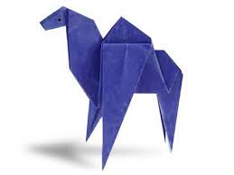
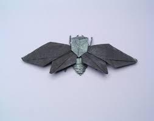
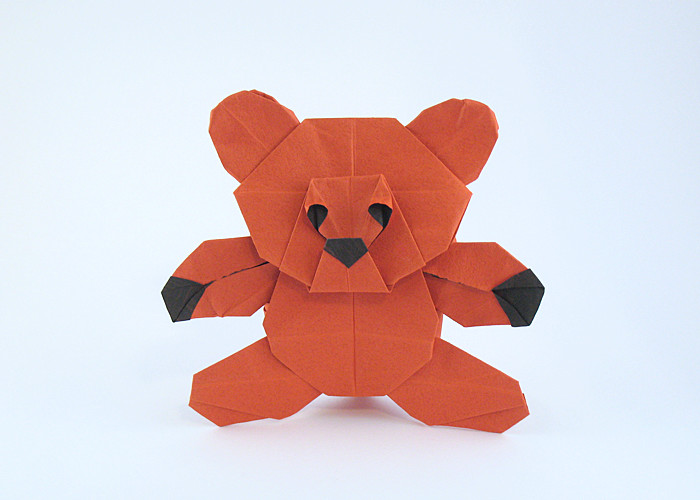

Origami Instructions and Diagrams
Step by step diagrams are probably the most popular and easiest to follow way to show how to fold things out of paper
Trying to find to find good origami instructions on the internet can be a lot of work though. To help your search we have
put together the largest database of free origami designs anywhere on the internet

Camel
- Camel's ears are furry
- Camels can move easily on sand because of their specially designed feet
- When they find water, they will drink as much as found

Chameleon
- Chameleon's can change their body colour at will
- They have a sticky and tongue which they use to prey on insects
- Their eyes can rotate 180 degree in their sockets so they have a wide vision

Cicada
- They are nocturnal insects
- They produce a sound by flapping their wings which is pleasant to the ears

Panda
- The belong to the bear family
- They eat bamboo and are exclusively found in the China
- They are omnivores

Pegion
- They are found everywhere except in Antartica
- They eat grains
- They come in various range of colours from grey to white

Teddy Bear
- These cuddly toys are a perfect bed partner while sleeping